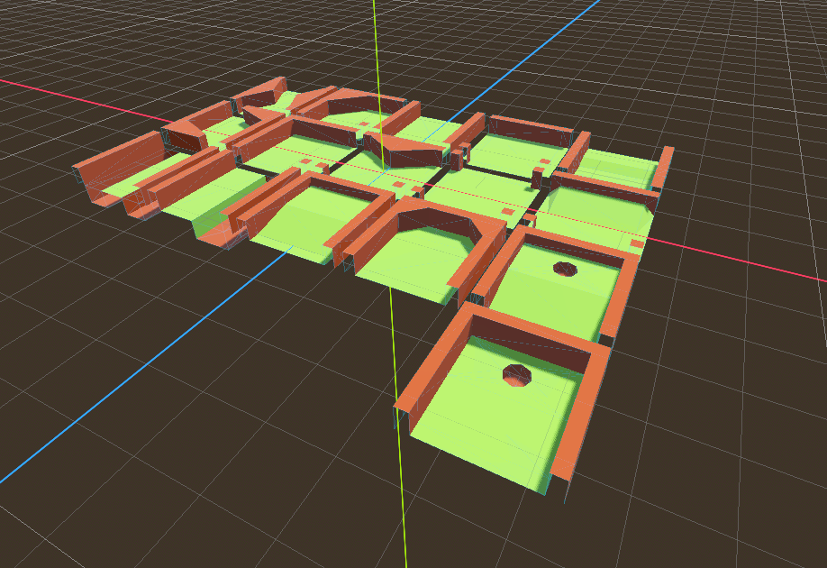
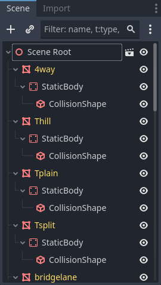
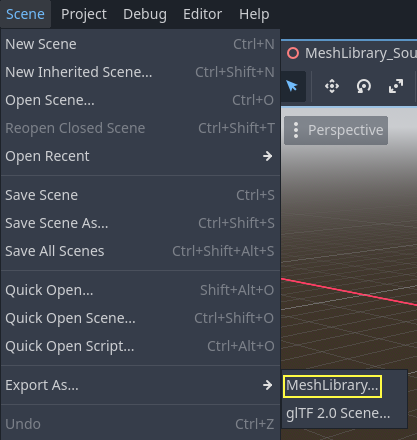
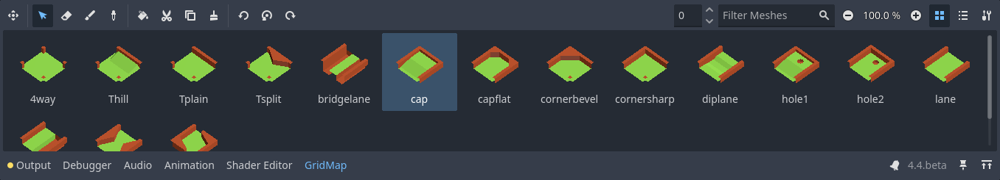

Using GridMaps
Introduction
Gridmaps are a tool for creating 3D game levels, similar to the way TileMap works in 2D. You start with a predefined collection of 3D meshes (a MeshLibrary) that can be placed on a grid, as if you were building a level with an unlimited amount of Lego blocks.
Collisions and navigation can also be added to the meshes, just like you would do with the tiles of a tilemap.
Example project
To learn how GridMaps work, start by downloading the sample project: gridmap_starter.zip.
Unzip this project and add it to the Project Manager using the "Import" button. You may get a popup saying that it needs to be converted to a newer Godot version, click Convert project.godot.
Creating a MeshLibrary
To begin, you need a MeshLibrary, which is a collection of individual meshes that can be used in the gridmap. Open the "mesh_library_source.tscn" scene to see an example of how to set up the mesh library.

As you can see, this scene has a Node3D node as its root, and a number of MeshInstance3D node children.
If you don't need any physics in your scene, then you're done. However, in most cases you'll want to assign collision bodies to the meshes.
Collisions
You can manually assign a StaticBody3D and CollisionShape3D to each mesh. Alternatively, you can use the "Mesh" menu to automatically create the collision body based on the mesh data.

Note that a "Convex" collision body will work better for simple meshes. For more complex shapes, select "Create Trimesh Static Body". Once each mesh has a physics body and collision shape assigned, your mesh library is ready to be used.

Materials
Only the materials from within the meshes are used when generating the mesh library. Materials set on the node will be ignored.
Lightmaps
It is possible to bake lightmaps onto a GridMap. Lightmap UV2 data will be reused from meshes if already present. If UV2 data is not present, then it will be automatically generated on bake with a lightmap texel size of 0.1 units. To generate UV2 data with a different lightmap texel size, you can set the global illumination mode in the Import dock to Static Lightmaps and specify the texel size there. This option must be changed before the scene is converted to a MeshLibrary, as changing it later on will not affect the existing MeshLibrary data.
Aside from this peculiarity, the lightmap baking process is the same as for any other 3D scene. See Using Lightmap global illumination for more information about lightmap baking.
MeshLibrary format
To summarize the specific constraints of the MeshLibrary format, a MeshLibrary scene has a Node3D as the root node, and several child nodes which will become MeshLibrary items. Each child of the root node should:
Be a MeshInstance3D, which will become the MeshLibrary item. Only this visual mesh will be exported.
Have a material, in the mesh's material slot, not the MeshInstance3D's material slots.
Have up to one StaticBody3D child, for collision. The StaticBody3D should have one or more CollisionShape3D children.
Have up to one NavigationRegion3D child, for navigation. The NavigationRegion3D can have one or more additional MeshInstance3D children, which can be baked for navigation, but won't be exported as a visual mesh.
Only this specific format is recognized. Other node types placed as children will not be recognized and exported. GridMap is not a general-purpose system for placing nodes on a grid, but rather a specific, optimized system, designed to place meshes with collisions and navigation.
Exporting the MeshLibrary
To export the library, click on Scene > Export As... > MeshLibrary..., and save it as a resource.

You can find an already exported MeshLibrary in the project named MeshLibrary.tres.
Using GridMap
Create a new scene and add a GridMap node. Add the mesh library by dragging the resource file from the FileSystem dock and dropping it in the Mesh Library property in the Inspector.

Inspector properties
The Physics Material setting allows you to override the physics material for every mesh in the NavigationMesh.
Under Cells, the Size property should be set to the size of your meshes. You can leave it at the default value for the demo. Uncheck the Center Y property.
The Collision options allow you to set the collision layer, collision mask, and priority for the entire grid. For more information on how those work see the Physics section.
Under Navigation is the "Bake Navigation" option. If enabled it creates a navigation region for each cell that uses a mesh library item with a navigation mesh.
If you click on the MeshLibrary itself in the inspector you can adjust settings for individual meshes, such as their navigation mesh, navigation layers, or if the mesh casts shadows.

GridMap panel
At the bottom of the editor is the GridMap panel, which should have opened automatically when you added the GridMap node.

From left to right in the toolbar:
Transform: Adds a gizmo to the scene that allows you to change the relative position and rotation of the gridmap in the scene.
Selection: While active you can select an area in the viewport, click and drag to select more than one space on the grid.
Erase: While active, click in the viewport and delete meshes.
Paint: While active, click in the viewport and add whatever mesh is currently selected in the GridMap panel to the scene.
Pick: While active, clicking on a gridmap mesh in the viewport will cause it to be selected in the GridMap panel.
Fill: Fill the area that has been selected in the viewport with whatever mesh is selected in the GridMap bottom panel.
Move: Move whatever mesh or meshes are currently selected in the viewport.
Duplicate: Create a copy of whatever the selected mesh or meshes in the GridMap are.
Delete: Similar to erase, but for the entire selected area.
Cursor Rotate X: While the paint tool is selected, this will rotate the mesh that will be painted on the X-axis. This will also rotate selected areas if they are being moved.
Cursor Rotate Y: While the paint tool is selected, this will rotate the mesh that will be painted on the Y-axis. This will also rotate selected areas if they are being moved.
Cursor Rotate Z: While the paint tool is selected, this will rotate the mesh that will be painted on the Z-axis. This will also rotate selected areas if they are being moved.
Change Grid Floor: Adjusts what floor is currently being worked on. Can be changed with the arrows, typing a value in the field, or Ctrl + Mouse wheel.
Filter Meshes: Used to search for a specific mesh in the bottom panel.
Zoom: Controls the zoom level on meshes in the bottom panel.
Layout toggles: These two buttons toggle between different layouts for meshes in the bottom panel.
Tools dropdown: This button opens a dropdown menu with a few more options.

Clicking on Settings in that dropdown brings up a window that allows you to change the Pick Distance, which is the maximum distance at which tiles can be placed on a GridMap, relative to the camera position (in meters).
Using GridMap in code
See GridMap for details on the node's methods and member variables.